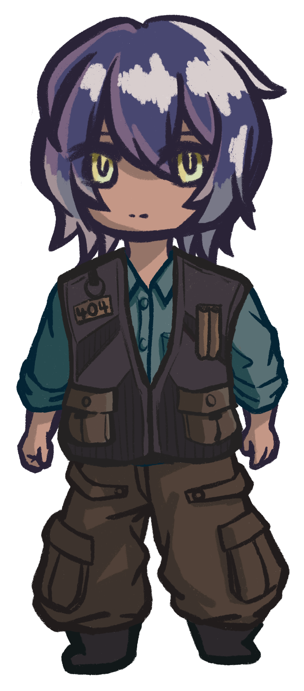

CHARACTER PROFILE
盧卡斯 LUCAS
404
年齡21 歲
性別男
時代背景中世紀歐洲
出身貧困農村家庭
盧卡斯出身於一個貧困的農村家庭。父親因病早逝後，家中只剩他一人承擔生計：重病的母親與年幼的弟妹，都等著他帶回收入。為了讓家人能繼續生活，他把賺錢養家當成最迫切的目標。
聽聞「萬物調查局」薪酬優渥，盧卡斯便帶著這份執念加入。代號 404 的調查員，就此踏進一段未知的旅程。

盧卡斯出身於一個貧困的農村家庭。父親因病早逝後，家中只剩他一人承擔生計：重病的母親與年幼的弟妹，都等著他帶回收入。為了讓家人能繼續生活，他把賺錢養家當成最迫切的目標。
聽聞「萬物調查局」薪酬優渥，盧卡斯便帶著這份執念加入。代號 404 的調查員，就此踏進一段未知的旅程。
故事由此開始
為了守住家人的生活，盧卡斯選擇加入萬物調查局。接下來等待他的任務與相遇，將逐步揭開這個微觀世界的故事。
一件不起眼的古物，讓代號 404 的調查員踏上意想不到的旅程。
整理完手邊文件後，盧卡斯又一次想起自己加入調查局的理由——賺錢，讓病中的母親和年幼的弟妹好好活下去。就在這時，他收到一項新任務：尋找一群消失的苔蘚。
他看著任務資料，心裡卻忍不住自怨自艾。這似乎又是一件報酬微薄、沒什麼人關注的差事；難道自己就只配接下這種任務嗎？盧卡斯把資料擱到一旁，默默走進古物倉庫，繼續整理堆積如山的舊物。
在一件件古物之間，他意外發現一個形狀像放大鏡的物件。盧卡斯拿起它仔細端詳，眼前忽然一陣暈眩，身體也像被看不見的力量緊緊拉住。等他回過神，周圍的一切已全然不同——他竟穿越進一只顯微鏡下的生態瓶裡。
古物倉庫 顯微鏡下的瓶中世界陌生的景色讓盧卡斯摸不著頭緒。他環顧四周，反覆確認自己是否真的來到了另一個世界。正當他還在尋找答案時，遇見了名叫多多的夥伴。
多多帶來一項任務，盧卡斯也因此開始在這片微小天地裡行動。完成任務後，他獲得了第一份獎勵——一只背包。這趟旅程從眼前的小小任務展開，而蘚微境的生活也逐漸向他敞開。
至於商店與這裡的交易方式，則會由蘚微境裡的其他生物向盧卡斯介紹。對初來乍到的他而言，每一次相遇，都是認識這個世界的新線索。
遇見多多 接下任務 獲得第一個背包